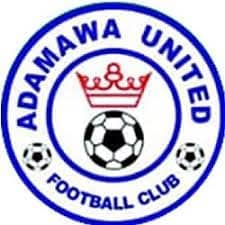

Adamawa United Football Club Association
Gorko Adamawa
Amin: Ko yaɓi club football walliru Nigeria, ɓuuɓɓe talent suudu e walliru excellence sports Adamawa.
Baɗe Club
Adamawa United Football Club ko club football professional Yola, walliru Adamawa State football competitions Nigerian. Club ɗaa ko platform ɓuuɓɓe talent football suudu e walliru sports region.

Haaloje Club
- Nanaade Football: Walliru leagues naatiinal
- Tatnugol Jindagol: Academy e projaamji tatnugol
- Caggal Rewbe: Local sports initiatives
- Njaŋgol Ɓuuɓɓe: Janngo players ko walliru
- Ilme Football: Clinics football e workshopji tatnugol
Projaam ɓuuɓɓe
- Youth Academy:
- Tatnugol tekniki
- Conditioning leyɗe
- Tatnugol jom ngaari
- Projaam Rewbe:
- Projaam football suudu
- Taalol rewbe
- Jeyaaɗi ilme football
Haleede
- Dowrowe tatnugol
- Stadium nder suudu
- Naŋŋe tatnugol
- Haleede sokla
- Haleede Academy jindagol
Jokkondir
- Naatore Club:
- Naatore kadi matches
- Sottude merchandise
- Naatore fan clubs
- Projaam Mbiyu:
- Ngulnere Academy
- Camp tatnugol
- Taalol mbiyu